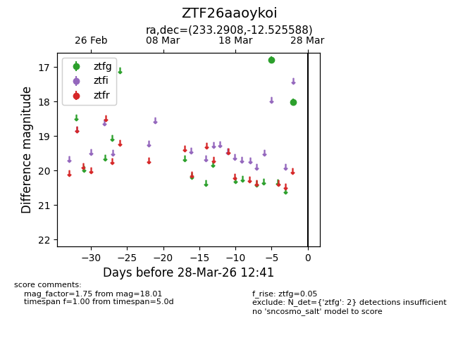
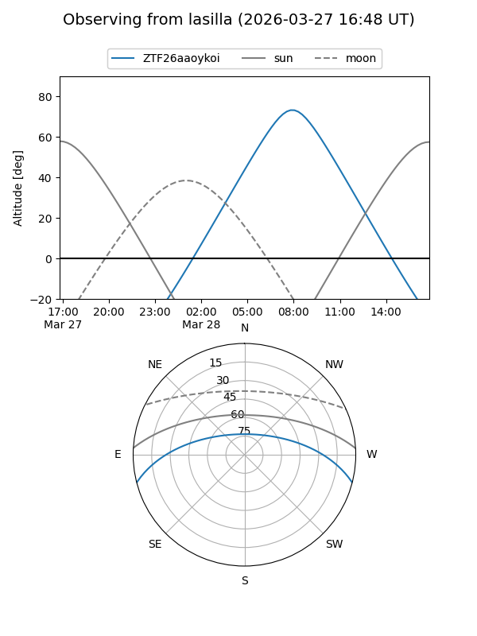
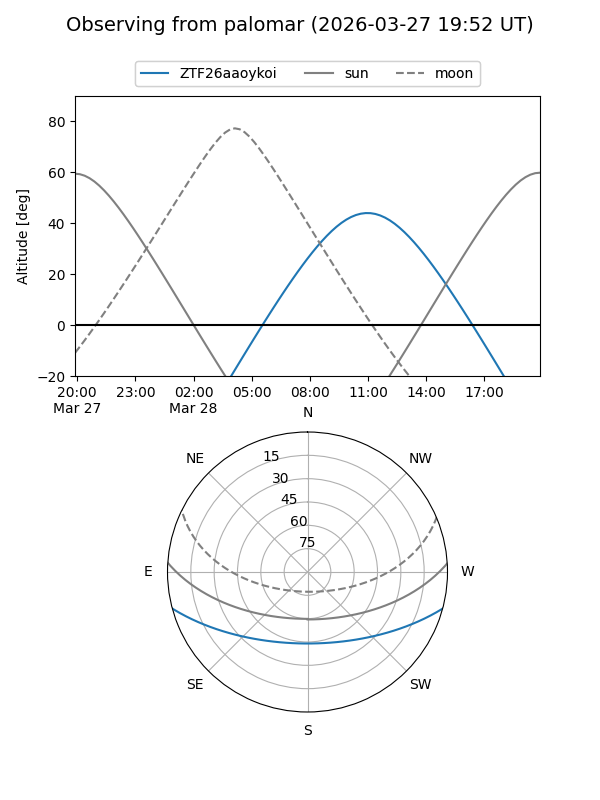

ZTF26aaoykoi
Target ZTF26aaoykoi at 2026-03-28 12:46
Aliases and brokers:
FINK: link
Lasair: link
ALeRCE: link
alt names
ZTF26aaoykoi (ztf,fink_ztf)
Coordinates:
equatorial (ra, dec) = 233.2908,-12.52559
equatorial (HMS+DMS) = 15:33:09.79,-12:31:32.12
galactic (l, b) = (352.8996,+34.22396)
Flags:
Photometry:
last ztfg=18.01
2 ztfg detections
Lightcurve

Visibility


Additional plots